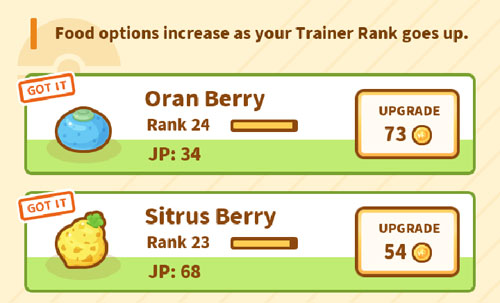
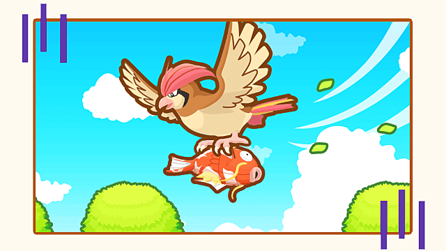

Molto semplicemente, il metodo delle due bacche è una strategia di gioco in cui tu (il giocatore) spendi tutte le tue monete aggiornando solo le due bacche iniziali (Baccarancia e Baccacedro). Non acquisti nuove bacche e non spendi nemmeno monete per l'allenamento.
Il potere del metodo delle due bacche deriva da alcune meccaniche di gioco che funzionano insieme:
Quindi, il metodo delle due bacche ti consente uno stile di gioco attivo in modo tale che il minimo PM che puoi aspettarti di ottenere per bacca sia almeno la tua bacca più debole. Avendo sbloccato solo due bacche e mantenendo il loro PM all'incirca uguale mentre le aggiorni, ti assicuri che la tua bacca più debole sia eccezionalmente forte.
Il motivo per cui funziona meglio con due bacche è perché è considerevolmente più costoso salire di livello di tre o più bacche. Per metterlo in prospettiva: l'acquisto di una sola bacca in più (la Baccapesca), costerebbe altri 5,2 milioni di monete per portarle tutte e 3 al livello 100 - aumento del prezzo di oltre il 55%.
Il metodo delle due bacche è molto, molto più efficace di qualsiasi altra strategia se intendi essere un giocatore estremamente attivo. Il metodo delle due bacche rimuove ogni varianza statistica; Entrambe le bacche danno all'incirca lo stesso PM. Combinare questo con il modo in cui il metodo consente uno stile di gioco attivo porta a una strategia estremamente coerente, indipendente dalla fortuna e ottimale. Tuttavia, è monotono e rimuove potenziali vantaggi a favore della riduzione della varianza statistica, cioè non puoi sperimentare quell'esperienza appagante da giocatore di ottenere un colpo di fortuna dal miglior metodo di allenamento e ottenere un sacco di PM in una volta sola.
Alla fine, è il tuo gioco. Se vuoi giocare in modo più ottimale mentre sei costretto a dedicare più tempo al gioco, sentiti incoraggiato a resettare, mentre se stai giocando in modo più casuale (piccole quantità di tempo distribuite nel corso della giornata), probabilmente non vale la pena reimpostare il metodo delle due bacche.